岩手・秋田旅行
| 日付 | 2021年7月31日（土） - 2021年8月7日（土） | ||||||||
|---|---|---|---|---|---|---|---|---|---|
| 山域 | 東北の山 | ||||||||
| メンバー | 家族（妻、長女・10歳、長男・8歳） | ||||||||
| 山行形態 | 子連れ7泊8日キャンプ | ||||||||
| アクセス | 車、バス | ||||||||
| ルート |
|
昨年は天候不順で行けなかった北東北旅行。
今年の夏も昨年同様、北東北に向かう計画を立てる。
昨年同様、後生掛キャンプ場の予約を取っていたのだが、
コロナ蔓延を理由にキャンプ場からキャンセルされる。
コロナを理由に計画変更を余儀なくされるのは、
今年のGWに引き続き2回連続だ…
幸い、民間のキャンプ場は受け入れ可能で、
予約も取れたため、東北の地に向かう。
1日目
少し早めに岩手に着いたため、焼走り溶岩流を見に行くことにする。
岩手山から流れ出た溶岩を見学することができる。
ここは岩手山の登山口でもあるため、そこそこ車が停まっている。
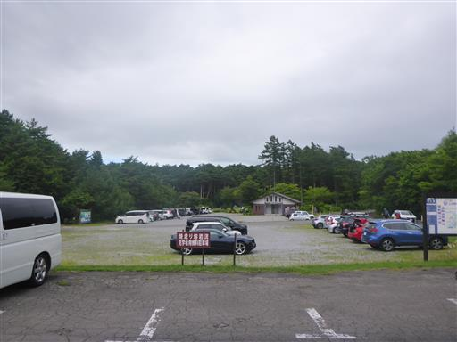
1kmの遊歩道が整備されており、歩いてみることにする。
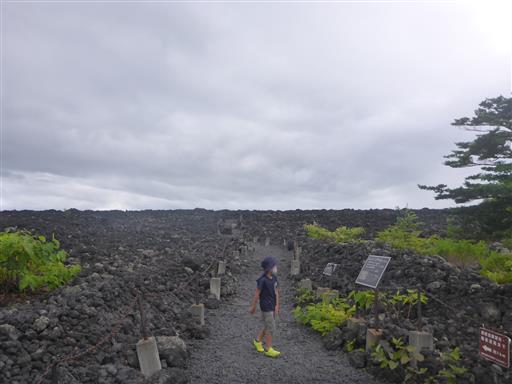
大小さまざまな黒い石がどこまでも広がっている。
ところどころに植物が見られる。
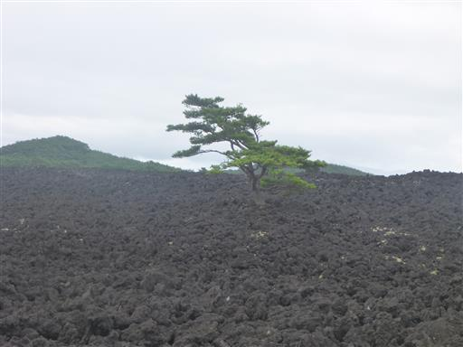
足元に見える白いものは、解説板によるとシモフリゴケという植物のようだ。
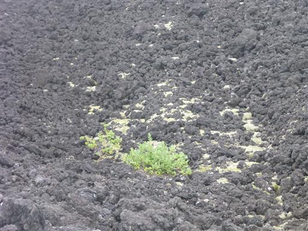
本当はこの焼走り溶岩流の背後に見事な岩手山が見えるはずなのだが、
本日の天候では完全に雲の中だ。
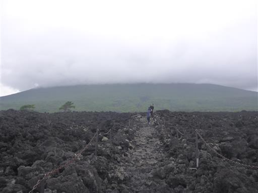
遊歩道を歩いた先に展望台がある。
しかし登ってもあまり展望は広がらない。
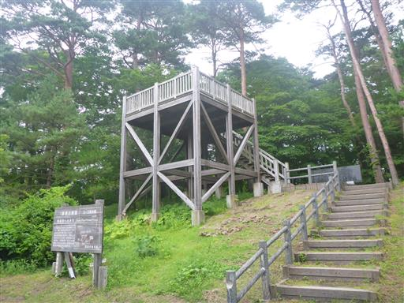
1000mを1時間かけてゆっくり歩くように書かれている。
少々大きなお世話という気がしなくもない。
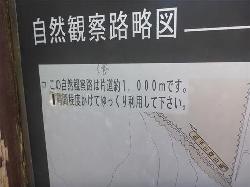
これから7泊お世話になる網張温泉キャンプ場に到着する。
土曜という事もあり、キャンプ場はそこそこ賑わっている。
奥にあるテントはキャンプ場据え付けの手ブラプラン用テントのようだ。
雨は降ったり止んだりだが、幸い止んでいる時に設営できた。
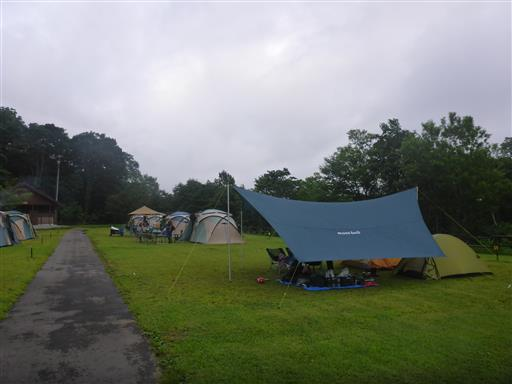
すぐ側に網張温泉の日帰り入浴施設があるので便利だ。
キャンプ場と同資本の施設と思われるが、残念ながら割引はない。
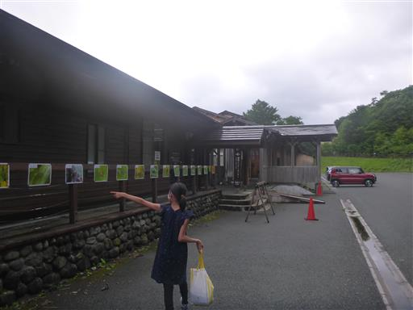
だいぶ青空が出てきた。
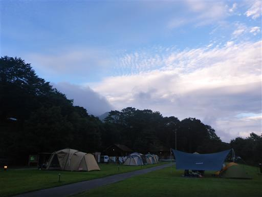
今回のテントサイト。いつも通りの装備。
夕方はアブが多くて非常に鬱陶しい。
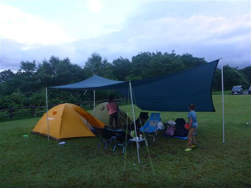
ライトトラップで虫を集めている人がいたので見学。
コガネムシがたくさん集まってくる。
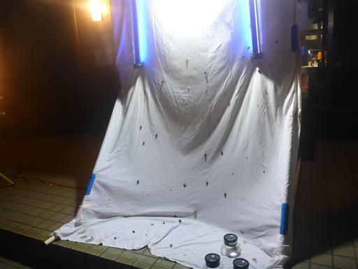
カゲロウ。
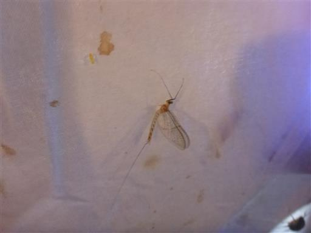
何やらイベントをやっているようで、団体さんがやって来ては去っていく。
いろいろ虫の名前を教えていただいた。
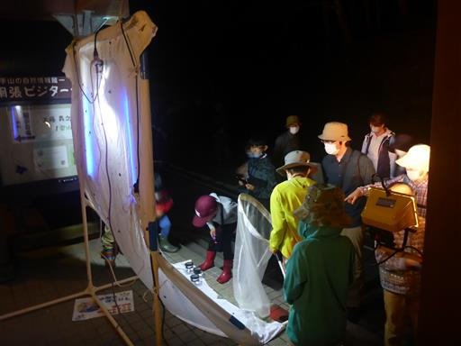